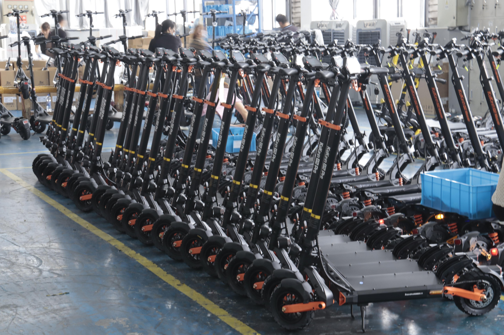
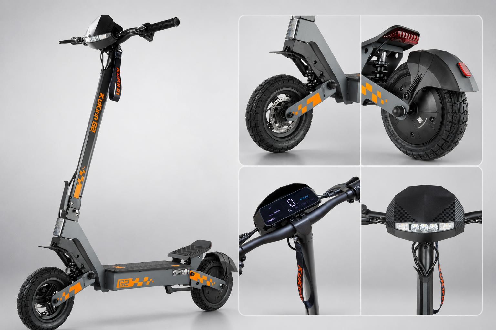

KuKirin – Az elektromos rollerek világa
A KuKirin egy olyan márka, amely az elektromos rollerek világában egyre nagyobb népszerűségnek örvend. A gyártó elsősorban modern megjelenésű, erőteljes és praktikus elektromos rollereket kínál. Modelljei között megtalálhatók a hétköznapi városi közlekedésre tervezett változatok, valamint a nagyobb teljesítményű, hosszabb utakra szánt típusok is. A márka célja, hogy különböző igényekhez megfelelő elektromos rollereket kínáljon, amelyek ötvözik a modern technológiát, a kényelmet és a látványos kialakítást.



Népszerű KuKirin modellek
| Tulajdonság | KuKirin G2 | KuKirin G2 Master | KuKirin G3 | KuKirin G4 |
|---|---|---|---|---|
| Motor teljesítménye | 800 W | 2000 W | 1200 W | 2000 W |
| Maximális sebesség | 45 km/h | 60 km/h | 50 km/h | 70 km/h |
| Akkumulátor | 48 V | 52 V | 52 V | 60 V |
| Hatótáv | 55 km | 70 km | 63 km | 75 km |
| Kerékméret | 10" | 10" | 10" | 11" |
| Rugózás | Van | Van | Van | Van |
| Fékrendszer | Tárcsafék | Tárcsafék | Tárcsafék | Tárcsafék |
| Maximális terhelhetőség | 120 kg | 120 kg | 120 kg | 150 kg |
| Súly | 26 kg | 33 kg | 31 kg | 37 kg |

KuKirin G2 – A népszerű középkategóriás modell
A KuKirin G2 a márka egyik legismertebb modellje. Modern, sportos megjelenésű kialakítással rendelkezik, amelyhez kényelmes rugózás és digitális kijelző társul. A roller olyan felhasználóknak készült, akik egy erősebb, masszívabb elektromos rollert keresnek a mindennapi közlekedéshez. Kialakítása stabil haladást biztosíthat, a megfelelő karbantartás pedig hozzájárulhat a hosszabb élettartamhoz. A G2 különösen azok számára lehet érdekes, akik a városi modelleknél komolyabb felszereltséget szeretnének.
A KuKirin rollerek fajtái
- KuKirin M4
- KuKirin M4 pro
- KuKirin M4 max
- KuKirin S1
- KuKirin S1 max
- KuKirin A1
- KuKirin T3
- KuKirin T4
- KuKirin V1 pro
- KuKirin G2
- KuKirin G2 pro
- KuKirin G2 max
- KuKirin G2 master
- KuKirin G2 ultra
- KuKirin G3
- KuKirin G3 pro
- KuKirin G4
- KuKirin G4 max
- KuKirin G4 ultra
Miért választják a KuKirint?
A KuKirin népszerűségének egyik oka, hogy többféle árkategóriában és teljesítményszinten kínál elektromos rollereket. A sportos megjelenés, a masszív kialakítás és a különböző technikai megoldások sok vásárló figyelmét felkeltik. A márka modelljei között találhatók egyszerűbb és komolyabb felszereltségű változatok is. Vásárlás előtt azonban érdemes összehasonlítani a hatótávot, a motor teljesítményét, a fékrendszert és a roller tömegét, hiszen ezek jelentősen befolyásolják a használati élményt.